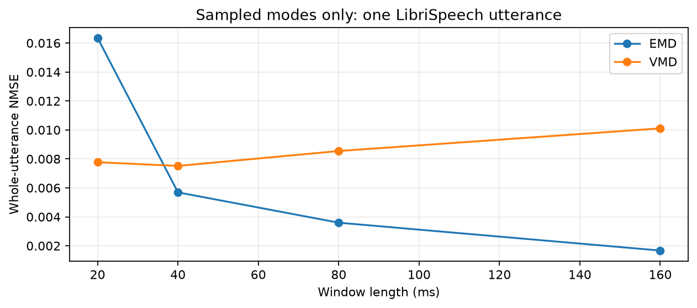
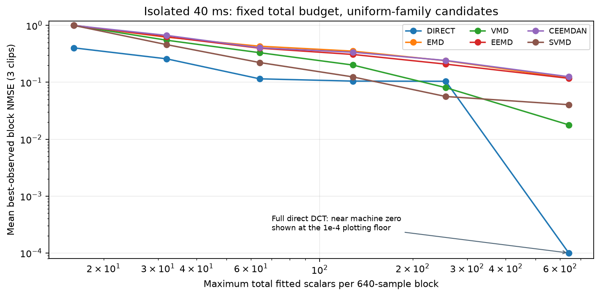
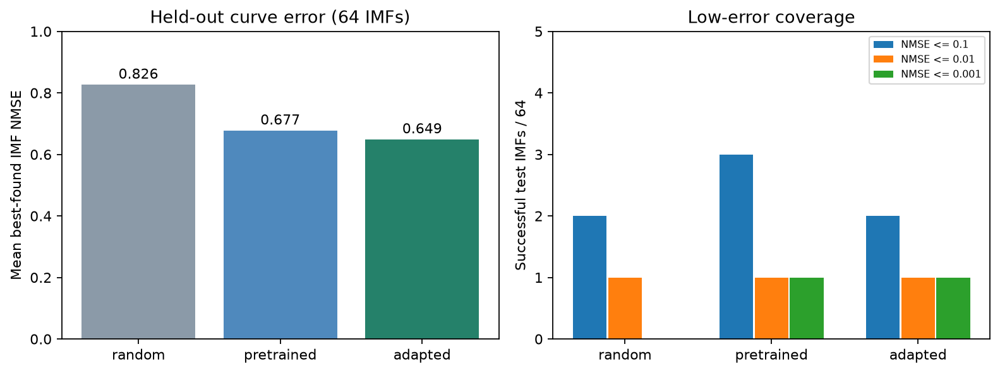

Research results | 4 November 2026 | Saved-output retrospective
Parametric speech experiments: results to date
This report covers the parametric research sequence: sampled decomposition, the stopped multi-window sweep, its implementation audit, isolated 40-ms fitting, the shared representation pilot, and explicit IMF expression discovery. Smoke tests and superseded launches are not treated as independent scientific evidence.
What the experiments currently establish
- Sampled EMD/VMD modes reconstruct the original testcase well; sampled residual controls restore omitted detail. This did not test compression.
- Poor low-budget fitting persists without overlap or stitching. Three isolated blocks show very different difficulty.
- In the recorded conservative 1% error-bound selections, direct fitting used fewer scalars than every decomposition arm on all three blocks. These are finite-library selections, not globally minimal representations.
- The shared representation pilot did not discover mathematical expressions. Its strongest high-budget result was the direct PCA baseline.
- The symbolic learner improved average held-out fitting over random proposals, but only 1/64 adapted IMF fits reached NMSE <= 0.01. Synthetic oscillatory discovery also remained weak.
We have not demonstrated a broadly reliable compact speech representation or a perceptual-quality improvement. Learned VMD and RVQ have not been trained in this sequence.
Run ledger
| Experiment | Saved status | Completed units | Recorded active minutes | Data / scope |
|---|---|---|---|---|
| Sampled EMD/VMD baseline | complete | 8/8 decomposition cases | 4.42 | One 5.855-second LibriSpeech utterance; sampled modes |
| Multi-window parametric pilot | stopped_by_user | 452/744 | 184.2 | Full utterance, overlapping windows, quantized coefficients |
| Isolated 40-ms curve fitting | complete | 972/972 | 78.9 | Three blocks, five decomposers plus direct, 53 candidates each |
| Shared representation pilot (different scope) | complete | 57224/57224 | 12.87 | 4096 train / 256 validation / 256 test blocks |
| Explicit per-IMF expression discovery | complete | 1782/1782 | 9.575 | 120 eligible train / 32 validation / 64 test IMFs |
Progress units differ: decomposition cases, fitting jobs, data preparation, optimizer updates and search jobs are not comparable workloads. Times are the saved active-time estimates, excluding pauses and unrecorded work. Zero final failures does not mean every candidate fit is accurate or globally optimized. The symbolic run resumed after an HTML replacement error; the report-only repair is preserved in repair_history.json.
1. Sampled EMD/VMD baseline
Question: can short-time decomposition and normalized overlap-add reconstruct one LibriSpeech testcase before parameter fitting?
Utterance 1272-128104-0000: 93,680 samples, 16 kHz, 5.855 seconds. EMD and eight-mode VMD were run at 20/40/80/160 ms with 50% overlap. The table shows modes-only output, before adding a sampled residual.

| Method | Window ms | NMSE | PESQ-WB | STOI |
|---|---|---|---|---|
| emd | 20 | 0.01635 | 4.19 | 0.9999 |
| emd | 40 | 0.005689 | 4.609 | 1 |
| emd | 80 | 0.003595 | 4.643 | 1 |
| emd | 160 | 0.001672 | 4.644 | 1 |
| vmd | 20 | 0.007772 | 4.377 | 0.9873 |
| vmd | 40 | 0.007516 | 4.34 | 0.985 |
| vmd | 80 | 0.008543 | 4.357 | 0.9835 |
| vmd | 160 | 0.01011 | 4.357 | 0.9812 |
At 40 ms, modes-only EMD gave NMSE 0.005689 and VMD 0.007516. Adding the sampled residual yielded zero reported float64 NMSE for EMD and near-machine-precision reconstruction for VMD. These controls retained sampled arrays, so their quality cannot be interpreted as a compact parameter result.
PESQ/STOI here describe the full utterance. They are not scores for isolated IMFs or 40-ms clips, and no new listening evaluation was conducted.
2. Stopped multi-window sweep and implementation audit
The broad sweep compared EMD, VMD, EEMD, CEEMDAN, SVMD and direct fitting across 20/40/80/160-ms windows. Six function families, budgets of 500-8000 scalars/second and four coefficient precisions were planned. It stopped at 452/744 jobs after 184.25 recorded minutes; available results are incomplete and do not support a balanced global ranking.
Important audit findings: low per-mode allocations could produce empty nonlinear models; 80-step fitting was inadequate in a known representable AM-FM example; payload metadata could dominate coefficient bytes. Therefore this report does not rank function families by that sweep or use its perceptual-score outliers as evidence.
| Known chirp test | Fitting steps | Stored values | NMSE |
|---|---|---|---|
| amfm | 80 | 6 | 0.6535 |
| amfm | 800 | 6 | 2.804e-15 |
| oracle_amfm | 0 | 6 | 6.672e-30 |
With the same six-value AM-FM representation, the old fitter changed from NMSE 0.6535 at 80 steps to 2.804e-15 at 800 steps. The known correct values gave 6.672e-30. This demonstrates an optimization failure in that test; it does not establish a shortage of representational capacity.
Coefficient precision audit
| Bits / coefficient | NMSE | Model values | Total payload bytes | Metadata bytes |
|---|---|---|---|---|
| 32 | 1.709e-15 | 6 | 143 | 119 |
| 16 | 7.546e-07 | 6 | 139 | 119 |
| 12 | 0.0003349 | 6 | 136 | 119 |
| 8 | 0.1128 | 6 | 132 | 118 |
For this one known chirp, reducing coefficients from 32 to 8 bits changed payload size only from 143 to 132 bytes because metadata dominated, while error rose from 1.71e-15 to 0.1128. Later isolated and learned experiments therefore omitted quantization. This is not a general quantization or RVQ result.
An earlier launch in parametric_ablation_librispeech_1272 failed during a Windows progress-file replacement and was superseded by the v2 directory. Its stale running flag is not used as evidence of an active experiment.
3. Isolated 40-ms curve-fitting study
Question: how much fitting error remains when the complete input is just 640 samples and there are no stitches?
Three blocks from the same utterance start at 0.96, 1.96 and 2.96 seconds. Five decomposers plus a direct-waveform arm received only each isolated block. The 53-candidate library covered Chebyshev polynomial degrees 0-128, spline knot counts 2-256, DCT sizes 1-640, 1-16 sinusoidal atoms, 12 amplitude/phase order pairs, and widths 1/2/4/8 for per-component sine and SnakeBeta networks. Nonlinear fits used three starts and up to 1600 evaluations/steps. All 972 jobs completed.
Counts below are total fitted numerical values for the whole block, including represented residual components. There is no quantization, overlap, shared decoder or RVQ.

Best observed uniform-family result at a maximum of 128 scalars per block
| Clip | Method | Fitted family | Actual scalars | Block NMSE | Edge NMSE | Interior NMSE |
|---|---|---|---|---|---|---|
| 0 | emd | sinusoid | 72 | 0.2034 | 0.1405 | 0.2225 |
| 1 | emd | sinusoid | 84 | 0.2323 | 0.3918 | 0.2161 |
| 2 | emd | sinusoid | 96 | 0.6235 | 0.6089 | 0.6255 |
| 0 | vmd | sinusoid | 108 | 0.03246 | 0.03574 | 0.03146 |
| 1 | vmd | sinusoid | 108 | 0.223 | 0.2667 | 0.2186 |
| 2 | vmd | amfm | 90 | 0.3475 | 0.6062 | 0.3115 |
| 0 | eemd | sinusoid | 108 | 0.1079 | 0.1059 | 0.1086 |
| 1 | eemd | sinusoid | 108 | 0.2274 | 0.3747 | 0.2125 |
| 2 | eemd | amfm | 80 | 0.5898 | 0.8791 | 0.5496 |
| 0 | ceemdan | sinusoid | 96 | 0.1406 | 0.1532 | 0.1368 |
| 1 | ceemdan | sinusoid | 96 | 0.2481 | 0.2463 | 0.2483 |
| 2 | ceemdan | sinusoid | 108 | 0.6232 | 0.6084 | 0.6253 |
| 0 | svmd | sinusoid | 108 | 0.025 | 0.02569 | 0.02479 |
| 1 | svmd | sinusoid | 120 | 0.08264 | 0.1139 | 0.07947 |
| 2 | svmd | sinusoid | 84 | 0.2654 | 0.3905 | 0.248 |
| 0 | direct | dct | 128 | 0.002519 | 0.002744 | 0.00245 |
| 1 | direct | dct | 128 | 0.004592 | 0.01152 | 0.003889 |
| 2 | direct | sinusoid | 48 | 0.3075 | 0.3978 | 0.295 |
Errors remain substantial in several arms without stitching. At this budget, the difficult third clip still has NMSE 0.3075 in the best direct candidate, 0.3475 for VMD and 0.2654 for SVMD. The first two direct clips reach 0.002519 and 0.004588. Difficulty varies strongly even within this single utterance.
The curve uses the best saved successful uniform-family fit within each total budget, then averages over all three clips. Missing all-clip coverage would omit a curve point. Values below 1e-4 are displayed at that plotting floor; the full direct DCT is near machine precision. These are retrospective best-observed results, not a trained selector or a generalization benchmark. Edge/interior values diagnose the saved reconstruction; native decomposition endpoint extensions still apply.
Recorded mixed-representation selections at conservative NMSE bound <= 0.01
| Method | Clip 0 scalars | Actual NMSE | Clip 1 scalars | Actual NMSE | Clip 2 scalars | Actual NMSE |
|---|---|---|---|---|---|---|
| DIRECT | 128 | 0.002519 | 97 | 0.00604 | 640 | 1.527e-31 |
| EMD | 284 | 0.003458 | 451 | 0.003406 | 1411 | 0.004746 |
| VMD | 235 | 0.002796 | 357 | 0.003414 | 2752 | 0.003406 |
| EEMD | 570 | 0.001789 | 1144 | 0.004327 | 1512 | 0.004415 |
| CEEMDAN | 300 | 0.003211 | 491 | 0.004433 | 1411 | 0.00467 |
| SVMD | 210 | 0.004724 | 295 | 0.005433 | 784 | 0.001016 |
The selector minimizes scalar count among available fitted candidates subject to a conservative triangle-inequality error bound. It does not minimize count subject to the exact summed-waveform error. The bound can be more conservative for a multi-component decomposition, so these counts alone do not establish a universal advantage for direct fitting. The 640-value direct result is the full DCT control, not compression.
A separate saved-result check found a maximum block-NMSE difference of 1.89e-15 between direct fitting and matched polynomial/spline/DCT projections after summing all represented modes and residual. For these shared linear spaces, decomposition repeated the coefficient overhead without improving the summed projection.
Same-budget listening examples
Each pair below uses the best saved candidate at <=128 total scalars. Clips are exactly 40 ms; playback supports artifact inspection but cannot establish speech intelligibility or perceptual quality.
5. Explicit per-IMF expression-discovery pilot
Question: can an IMF-conditioned model generate a small mathematical expression and fitted constants without a shared waveform decoder?
Frozen eight-mode VMD caches supply 16 train, four validation and eight test blocks. There are 120 eligible training IMFs after eight near-silent exclusions, 32 validation IMFs and 64 held-out test IMFs. The finite language contains t, adjustable constants, addition, subtraction, multiplication, sin, cos, tanh and square. An MLP/GRU proposes structures; bounded float64 least squares fits constants and output gain. Training used 1500 synthetic updates and 80 adaptation updates. Validation selected adaptation checkpoint 60.
Random, pretrained and adapted arms each receive 48 proposals per test IMF, scheduled tree limits 7/15/31, two fitting starts, and two frontier refinements with stronger fitting. Duplicates consume proposals. The test consists of 64 IMFs nested within eight chunks, not 64 independent speakers. No residual or full-block synthesis is evaluated here.

| Arm | Mean best NMSE | Median NMSE, <=16 values | <=0.1 /64 | <=0.01 /64 | <=0.001 /64 | Test search seconds |
|---|---|---|---|---|---|---|
| random | 0.8264 | 0.9218 | 2 | 1 | 0 | 19.23 |
| pretrained | 0.6773 | 0.7495 | 3 | 1 | 1 | 75.34 |
| adapted | 0.6486 | 0.7036 | 2 | 1 | 1 | 56.06 |
Adaptation lowered mean best-found NMSE from 0.8264 (random) to 0.6486, but low-error coverage remained poor: 2/64 reached NMSE <=0.1 and 1/64 reached <=0.01. Synthetic pretraining reached <=0.1 on 3/64, so adaptation did not improve every success measure.
Each arm made 3072 proposals; unique structures were 1982 random, 3048 pretrained and 2876 adapted. Equal proposals are not equal compute: recorded search took 19.23, 75.34 and 56.06 seconds respectively. These are one-seed pilot results without statistical significance claims. Description bits use a reference accounting rule, not an entropy-coded bitrate.
Discovery controls versus known-structure fitting
| Synthetic target | Search arm | Best-found NMSE | Stored values |
|---|---|---|---|
| quadratic | random | 0.02261 | 4 |
| sinusoid | random | 0.9239 | 4 |
| chirped_amfm | random | 0.9259 | 11 |
| quadratic | pretrained | 1.279e-09 | 10 |
| sinusoid | pretrained | 0.0887 | 2 |
| chirped_amfm | pretrained | 0.8127 | 4 |
| quadratic | adapted | 2.744e-32 | 3 |
| sinusoid | adapted | 0.8788 | 2 |
| chirped_amfm | adapted | 0.8778 | 3 |
With its mathematical structure supplied, the chirp fitting audit reached NMSE 8.88e-30; its maximum derivative-check error was 1.792e-09. In contrast, free structure discovery left large errors on sinusoid/chirp tests. The adapted model discovered the quadratic accurately but did not reliably discover the oscillatory targets. Successful fitting of a supplied expression must not be reported as successful function discovery.
The displayed formulas in the downloadable synthetic table are the actual best-found programs. Some are unnecessarily complicated; current literal parameter counts are not guaranteed minimal after algebraic simplification.
IMF listening example
First saved held-out IMF, adapted arm. These are native-amplitude mode signals, not complete speech.
Evidence we can use, and remaining gaps
| Question | Evidence so far |
|---|---|
| Do sampled modes reconstruct speech? | Yes on the initial testcase, especially with sampled residual controls. |
| Is stitching the sole cause of poor parameterized results? | No. Substantial fitting errors remain in isolated 40-ms blocks. The experiments do not quantify how much additional error stitching contributes. |
| Which decomposition is strongest? | No corpus-level winner established. Direct and SVMD are useful controls in the three-block study; results depend on budget, library and selection criterion. |
| Did a shared neural representation solve function discovery? | No. That pilot had a different output and did not outperform the strong direct PCA result at its larger budgets. |
| Did symbolic learning help? | Average held-out curve error improved, but accurate-fit coverage and synthetic oscillatory discovery remain inadequate. |
| Have we shown speech compression or perceptual superiority? | No reliable general claim. Scalar count, reference description bits and perceptual quality are distinct measurements. |
| Have we trained learned VMD or RVQ? | No. |
These are small, heterogeneous pilots. Their NMSE values cannot be pooled: some evaluate whole utterances, some isolated blocks, and the symbolic run evaluates individual IMFs. For the next study, function-search reliability and numerical fitting need stronger evidence before learned decomposition is judged through them.
Evidence and downloads
All tables and plots above are rebuilt from saved outputs. No new model training, speech fitting, hyperparameter selection or listening study was performed for this report.
- run_status.csv
- sampled_baseline.csv
- isolated_best_observed_by_budget.csv
- isolated_selector_at_001.csv
- shared_representation_test.csv
- symbolic_test.csv
- symbolic_synthetic_discovery.csv
- source_ledger.json
Original complete listening reports remain in runs/parametric_reports/: preliminary_multi_window_sweep_stopped_after_audit.html, isolated_40ms_capacity_complete.html, shared_representation_pilot_complete.html, and symbolic_imf_pilot_complete.html. The stopped sweep report is about 591 MB; this retrospective embeds only explicitly labeled examples.
NMSE is squared waveform error divided by reference squared energy; lower is better. NMSE 0.01 corresponds to -20 dB relative error energy, not a perceptual threshold. No independent human ratings validate the isolated block or IMF scores.